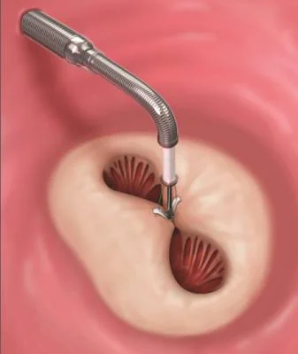
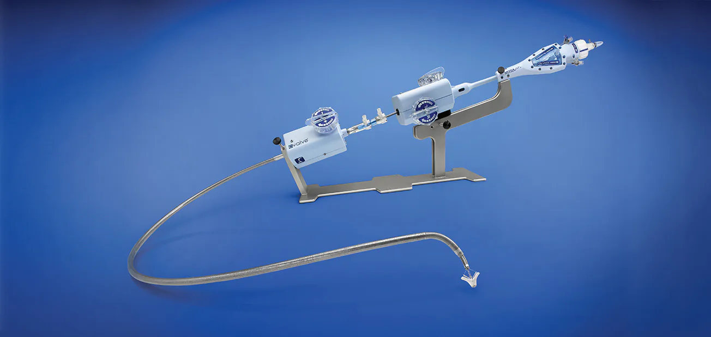
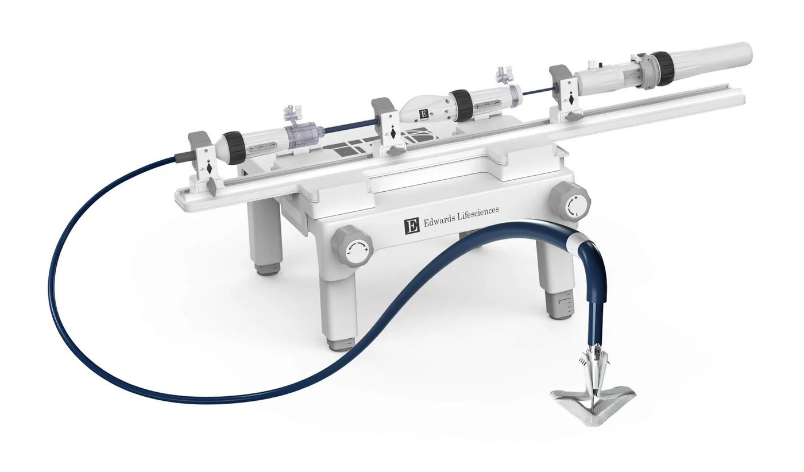
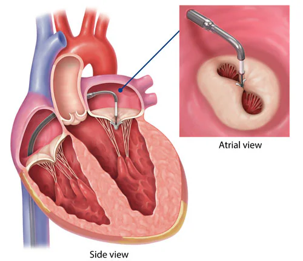
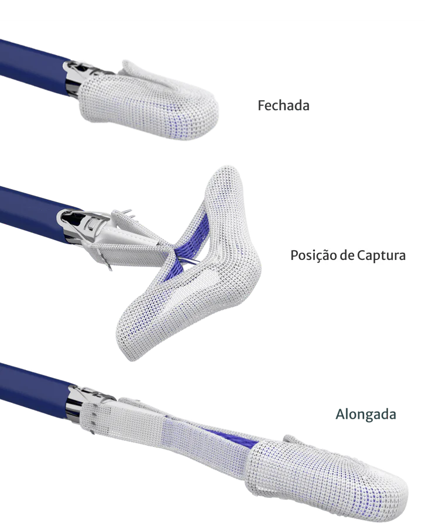

O que é o reparo bordo-a-bordo?
O Reparo Transcateter Bordo-a-Bordo (TEER) é um procedimento minimamente invasivo realizado por cateter para tratar a insuficiência mitral. A técnica é uma adaptação de um procedimento cirúrgico conhecido como sutura de Alfieri, em que as bordas livres das cúspides (ou folhetos) anterior e posterior da valva mitral são aproximadas no local do jato regurgitante, criando um orifício valvar duplo e reduzindo o escape de sangue.

Somos especializados nesses procedimentos
Nosso grupo de cardiologistas é especializado nesses procedimentos! O TEER representa um avanço significativo no cuidado de pacientes com insuficiência mitral, oferecendo uma opção segura e eficaz para melhorar a qualidade de vida.
Agende já uma avaliação ou uma consulta conoscoComo o TEER corrige a insuficiência mitral?
Com o TEER, essa aproximação é feita através de um pequeno dispositivo, como um “clipe” (por exemplo, MitraClip) ou um sistema com espaçador e pás (por exemplo, PASCAL), que é implantado através de um cateter. Esse cateter é geralmente inserido por uma veia na virilha (veia femoral) e guiado até o coração com o auxílio de exames de imagem, como ecocardiografia transesofágica (ETE) e fluoroscopia (Raio-X em tempo real).

MitraClip
O “clipe” que prende as bordas livres dos folhetos anterior e posterior, aproximando-os.

PASCAL
O sistema com espaçador central e pás, que ocupa o orifício da regurgitação e captura os folhetos.
O objetivo do TEER é melhorar o fechamento dos folhetos da valva mitral (coaptação das cúspides), diminuindo significativamente a quantidade de sangue que reflui.
Para quem o TEER é indicado?
A decisão de realizar um TEER é complexa e sempre tomada por uma equipe multidisciplinar especializada, o Heart Team, que inclui cardiologistas clínicos, intervencionistas/hemodinamicistas, cirurgiões cardíacos e especialistas em imagem cardíaca.
O TEER é geralmente considerado para pacientes com insuficiência mitral sintomática significativa (moderada a grave ou grave) que são considerados de alto risco ou risco proibitivo para a cirurgia convencional de valva mitral.
Os critérios de elegibilidade podem variar dependendo do tipo de insuficiência mitral:
Insuficiência mitral primária (degenerativa)
- Causada por um problema na própria valva mitral (ex: prolapso da valva mitral).
- Indicado para pacientes sintomáticos com anatomia valvar favorável e que apresentam alto risco para cirurgia.
- A expectativa de vida do paciente deve ser de, no mínimo, 1 ano.
Insuficiência mitral secundária (funcional)
- Causada por dilatação ou disfunção do ventrículo esquerdo (ex: após infarto ou em cardiomiopatias).
- Indicado para pacientes que permanecem sintomáticos apesar do tratamento clínico otimizado para insuficiência cardíaca.
- São considerados critérios específicos de função ventricular (fração de ejeção do ventrículo esquerdo geralmente entre 20-50%), dimensões do ventrículo e pressão da artéria pulmonar (baseados em estudos como o COAPT).
- A anatomia da valva mitral também deve ser favorável.
Contraindicações importantes
Contraindicações importantes incluem endocardite ativa (infecção da valva), presença de trombos no coração, doença valvar mitral reumática com estenose significativa, ou intolerância à terapia anticoagulante/antiplaquetária necessária após o procedimento.
A jornada do paciente: do diagnóstico ao pós-procedimento
Entender o processo pode ajudar a reduzir a ansiedade. Veja as etapas típicas.
Acesso pela veia
Um cateter é introduzido pela veia femoral, na virilha, e avançado até o átrio direito.
Punção transeptal
Uma pequena passagem no septo entre os átrios dá acesso ao átrio esquerdo e à valva mitral.
Captura dos folhetos
O dispositivo aproxima as cúspides anterior e posterior no ponto de maior regurgitação.
Avaliação pré-procedimento
Inclui uma avaliação clínica detalhada e exames de imagem, principalmente a ecocardiografia transesofágica (ETE) tridimensional, para confirmar a gravidade da IM, avaliar a anatomia da valva mitral e determinar se o paciente é um bom candidato.
O procedimento
- Realizado em um centro de hemodinâmica.
- Geralmente sob anestesia geral, devido à necessidade de orientação contínua pelo ecocardiograma transesofágico.
- Um cateter é introduzido pela veia femoral (na virilha) e avançado até o átrio direito. É realizada uma punção transeptal (uma pequena passagem no septo que divide os átrios) para acessar o átrio esquerdo.
- O sistema de entrega com o dispositivo TEER é então avançado através do septo até a valva mitral.
- Sob visualização ecocardiográfica e fluoroscópica, o dispositivo é posicionado para “clipar” ou aproximar as cúspides anterior e posterior da valva mitral no ponto de maior regurgitação.
- A redução da IM é avaliada em tempo real. Se necessário, um segundo dispositivo pode ser implantado.
- Todo o procedimento dura, em média, 2-3 horas.


Pós-procedimento
- O paciente é monitorado em uma unidade de recuperação e, posteriormente, no quarto.
- A maioria dos pacientes recebe alta hospitalar em poucos dias.
- É prescrita terapia antiplaquetária (como aspirina ou clopidogrel) por alguns meses para prevenir a formação de coágulos no dispositivo.
- O acompanhamento regular com ecocardiogramas é fundamental.
Benefícios e considerações do TEER
Benefícios
- Minimamente invasivo: sem a necessidade de cirurgia de peito aberto.
- Recuperação mais rápida: comparada à cirurgia convencional.
- Alívio dos sintomas: melhora da falta de ar, cansaço e aumento da capacidade de realizar atividades.
- Melhora da qualidade de vida.
- Opção para pacientes de alto risco cirúrgico.
Considerações e riscos
Como qualquer procedimento invasivo, o TEER possui riscos, embora geralmente baixos em centros experientes. As complicações podem incluir:
Pontos de atenção
- Sangramento no local da punção.
- Desprendimento parcial ou total do dispositivo (raro).
- Estenose mitral residual (estreitamento da valva após o reparo).
- Acidente vascular cerebral (AVC).
- Lesão esofágica devido à sonda do ecocardiograma transesofágico.
É crucial discutir todos os riscos e benefícios com a sua equipe médica. Nossa equipe de cardiologistas intervencionistas possui experiência e adota todas as medidas para garantir a segurança do procedimento.
O TEER é um avanço significativo no tratamento da insuficiência mitral
O Reparo Transcateter Bordo-a-Bordo (TEER) transformou o tratamento da insuficiência mitral, oferecendo uma opção segura e eficaz para pacientes que antes tinham poucas alternativas terapêuticas. Através de uma avaliação cuidadosa e da experiência de uma equipe multidisciplinar, o TEER pode proporcionar alívio significativo dos sintomas e melhorar a qualidade de vida.
Nosso grupo de cardiologistas está na vanguarda da cardiologia intervencionista estrutural, comprometido em oferecer as mais avançadas e personalizadas opções de tratamento para nossos pacientes.
Se você foi diagnosticado com insuficiência mitral e busca alternativas de tratamento menos invasivas, ou se deseja uma segunda opinião sobre sua condição, nossa equipe está pronta para ajudar.
Converse com nossos especialistas
Converse com nossos especialistas sobre o Reparo da Valva Mitral Bordo-a-Bordo (TEER). Agende sua avaliação e descubra se essa pode ser a melhor opção para você.
Agendar avaliaçãoFicou interessado nos nossos artigos? Confira outros com temas referentes a cardiologia intervencionista (hemodinâmica) aqui!
Perguntas frequentes
O TEER é uma cirurgia de coração aberto?
Não. O TEER é um procedimento minimamente invasivo realizado através de cateteres inseridos por uma veia na virilha, sem a necessidade de abrir o peito ou parar o coração.
Todos os pacientes com insuficiência mitral podem fazer o TEER?
Não. O TEER é indicado para um grupo selecionado de pacientes com insuficiência mitral sintomática significativa que são considerados de alto risco para cirurgia convencional e que possuem uma anatomia da valva mitral favorável ao procedimento. A decisão é sempre individualizada e tomada pelo Heart Team.
Qual o tempo de recuperação após o TEER?
A recuperação é geralmente muito mais rápida do que a cirurgia cardíaca tradicional. Muitos pacientes recebem alta em 1 a 3 dias e podem retomar atividades leves em pouco tempo, com melhora progressiva dos sintomas.
Referências
- Otto CM, Nishimura RA, Bonow RO, et al. 2020 ACC/AHA Guideline for the Management of Patients With Valvular Heart Disease. Circulation, 2021.
- Stone GW, Lindenfeld J, et al. Transcatheter Mitral-Valve Repair in Patients with Heart Failure (COAPT). N Engl J Med, 2018.
- Obadia JF, Messika-Zeitoun D, et al. Percutaneous Repair or Medical Treatment for Secondary Mitral Regurgitation (MITRA-FR). N Engl J Med, 2018.
- Zahr F, Smith RL, Gillam LD, et al. 1-Year Outcomes From the CLASP IID Randomized Trial for Degenerative Mitral Regurgitation. JACC Cardiovasc Interv, 2023.
- Abbott. MitraClip TMVr — Mitral Regurgitation Treatment.
Créditos das imagens
Este conteúdo foi útil? Compartilhe.
Ajude alguém a entender melhor o coração.